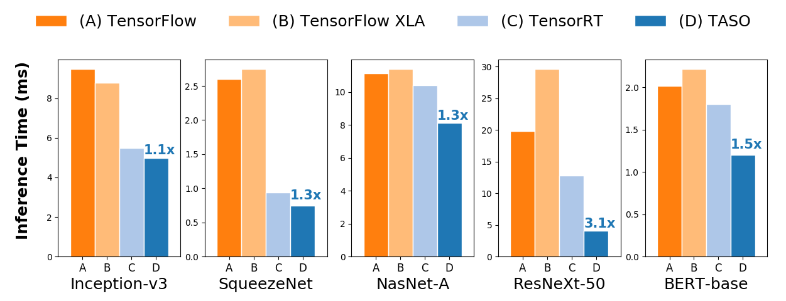
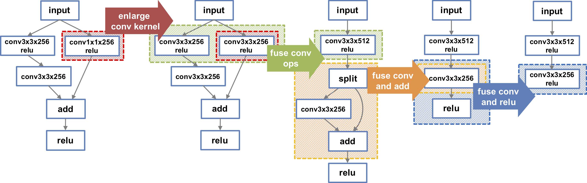

Authors:
Authors:
Generating substitutions.
TASO’s graph substitution generator enumerates all possible computation graphs over a
given set of DNN operators (e.g., the cuDNN kernels [10]) up
to a fixed size, and executes them on a set of random input
tensors. Any pair of computation graphs that have identical
results on the random inputs are considered as a candidate
substitution. To efficiently find all such pairs, TASO constructs a hash table where computation graphs are stored
based on the hash of their outputs for the random inputs

Image 1
Image 2
A graph substitution for fusing matrix multiplications with a shared input. The target graph has a concat and a
split operator, both of which are performed along the row dimension of a matrix. The split tree of the row dimension for
each tensor is shown in a gray box.
Step 1. Enumerating potential graphs and collecting their fingerprints. (Image 1)
Paper.
Press on Paper
to see full text
| Operator Property | Comment |
|---|---|
| ∀x,y, z. ewadd(x, ewadd(y, z)) = ewadd(ewadd(x,y), z) | ewadd is associative |
| ∀x,y. ewadd(x,y) = ewadd(y, x) | ewadd is commutative |
| ∀x,y, z. ewmul(x, ewmul(y, z)) = ewmul(ewmul(x,y), z) | ewmul is associative |
| ∀x,y. ewmul(x,y) = ewmul(y, x) | ewmul is commutative |